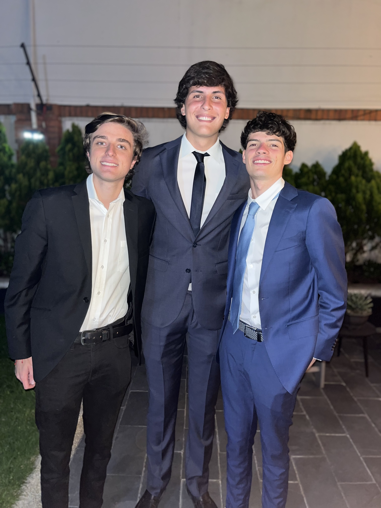
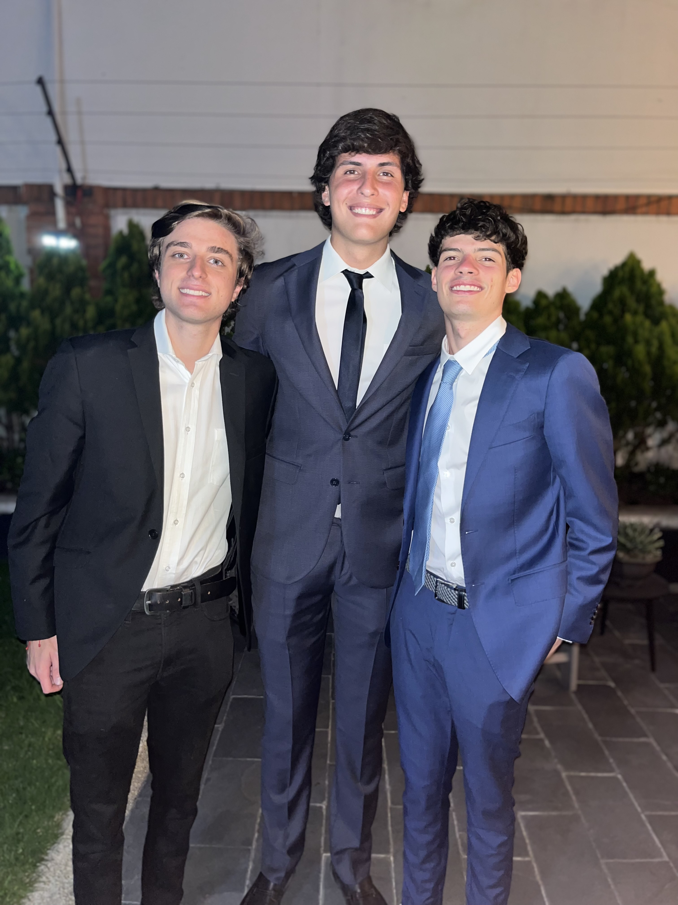

Get to know me!
Who am I?
My name is Jeronimo Gast, and I am a Computer Engineering student at Universidad Francisco de Vitoria (UFV) with Colombian and German background. Growing up surrounded by different cultures has made me open-minded, curious, and eager to learn from new experiences. I consider myself an extroverted and approachable person who enjoys meeting new people and adapting to new environments.
In my free time, I am especially passionate about traveling, as it allows me to discover new cultures and perspectives. I enjoy exploring cities on foot, as I believe walking is the best way to truly understand a place. I also enjoy cooking and experimenting in the kitchen, even though I still consider myself very much a work in progress.
 

My time at UFV
Moving to Madrid to study at UFV was a major step in my life, and the beginning was not easy. During my first year, I faced several challenges, especially when adapting to the academic level and keeping up with subjects such as mathematics. Adjusting to a new country and lifestyle added an extra layer of difficulty.
Despite these challenges, the experience helped me grow both academically and personally. With the support of the friends I made along the way and a stronger work routine, I began to see clear improvement. In my second year, I have gained more confidence, better organization skills, and a deeper understanding of the subjects.
Overall, my experience at UFV has taught me resilience and perseverance, and I am motivated to continue improving and proving myself throughout the rest of my degree.
Curriculum Vitae
Education
- Universidad Francisco de Vitoria - Bachelor's in Computer Engineering with a focus on Artificial Intelligence (2023 - present)
- Colegio Andino - German School of Bogotá (Graduated in 2022)
Skills
- HTML & CSS
- JavaScript
- C# (basic to intermediate)
- MATLAB
- Git & GitHub
- Teamwork and Communication
Languages
- Spanish - Native
- German - Native
- English - C1 (Advanced)
Experience
- Summer Counselor - Culver Summer Schools & Camps (2023-2024)
- Personal Web Projects (Frontend + GitHub deploys)
Social Media


This isn't all!
If you are interested, I have several additional projects available on my GitHub, and I am constantly working on new ones. Feel free to visit my profile through the link below.
GitHub